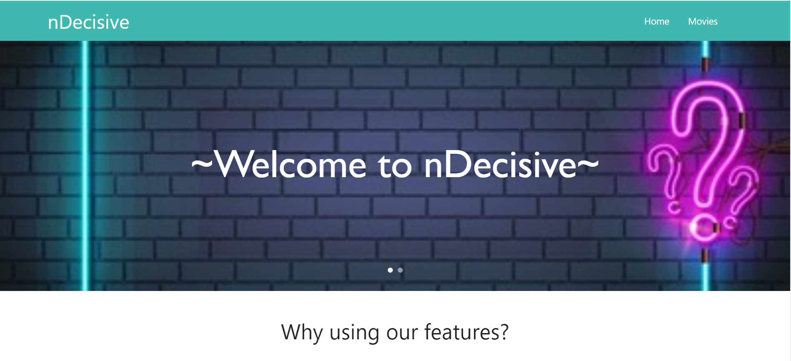
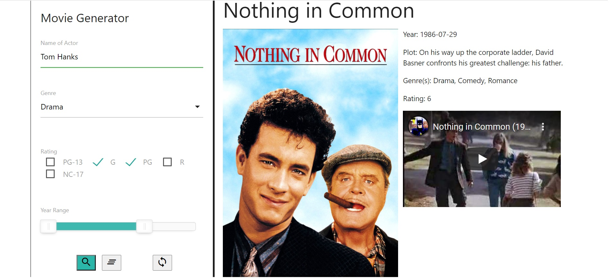
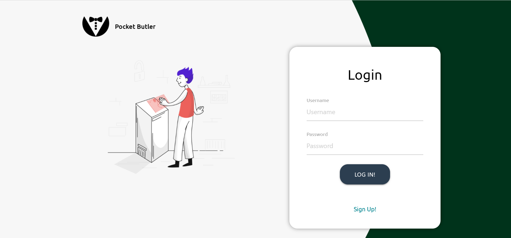
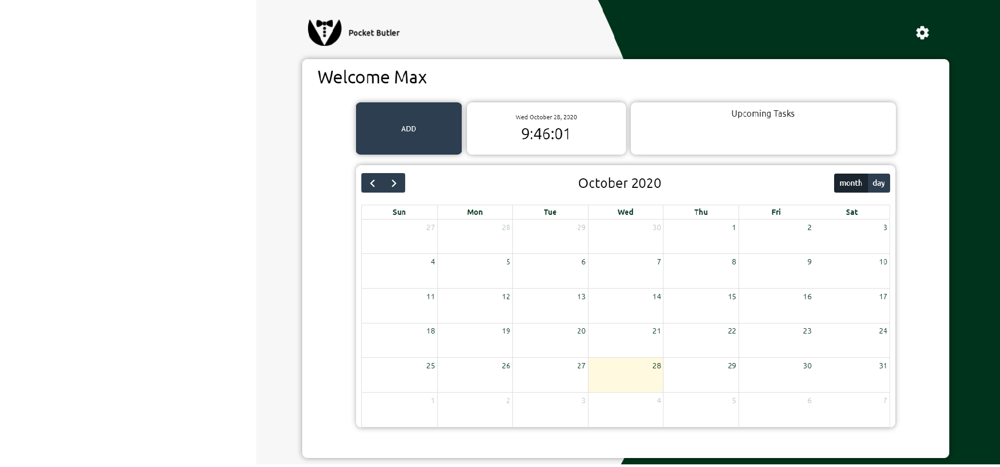
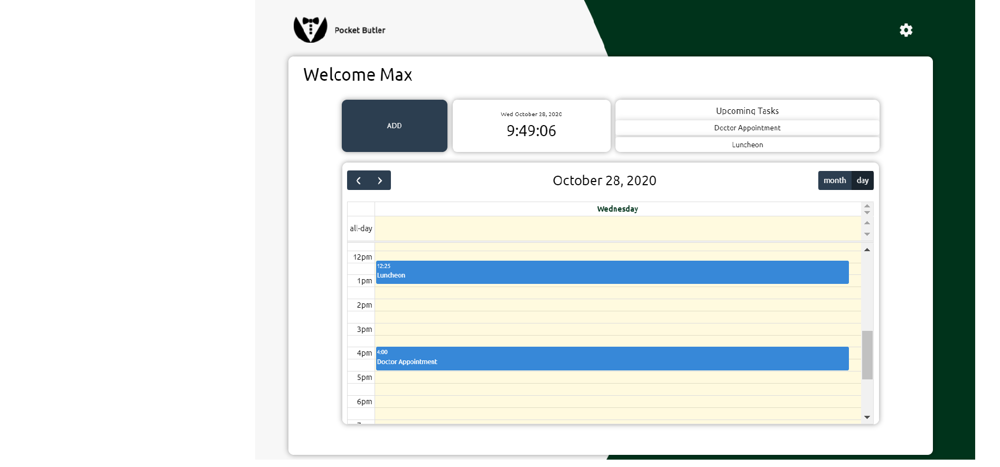

Portfolio
nDevisive
An app that recommends a movie to a user based on their desired criteria
Github Repository nDecisiveHome Page
Movie Recommendation in Action
Pocket Butler
A calendar app in which a user creates an account to conviently add tasks to their schedule that is neatly and professionally displayed in the app
Github Repository Pocket ButlerLogin/Signup Page
Calendar Page Month View
Calendar Page Day View
NFL Quiz
A timed quiz with question about the National Football League
Github Repository NFL QuizHome Page

Quiz in Motion

Highscore Page

Workday Scheduler
A scheduling program that dynamically displays the hours of the day and allows user write-in their tasks within hour blocks
Github Repository Workday SchedulerProgram without written-in tasks

Program with tasks saved